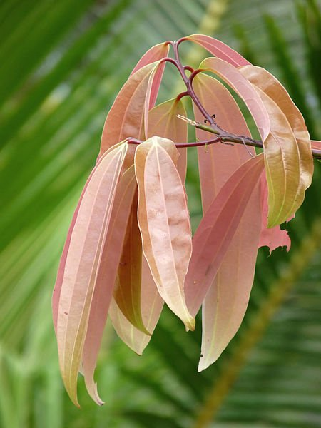

Overview of Tejapatra
Tejapatra, also known as Indian Bay Leaf (Botanical Name: Cinnamomum tamala Nees), is an important herb in Ayurveda. Below is a detailed overview of this valuable drug.
Basonym of Drug
Main Synonyms
- Patra
- Patranamaka
- Tamalapatra
- Tamala
Regional Names
- Bengali: Tejapatra
- Gujarati: Tamalpatra
- Hindi: Tejapatta, Tamalpatra
- Tamil: Kattukaruvapate
- Telugu: Aakupatri
- English: Indian Bay Leaf, Indian Cassia
Botanical Information
- Botanical Name: Cinnamomum tamala Nees
- Family: Lauraceae
- Classification (Gana):
- Bhavprakash Nighantu: Karpuradi Varga
- Dhanvantari Nighantu: Shatpushpadi Varga
- Raja Nighantu: Pippalyadi Varga
External Morphology
A big tree.
Useful Parts
Important Phytoconstituents
- Eugenol
- Alpha - Phellandrene
- Cinnamic Aldehyde
- Linalool
- Cineol
- Pinene
Rasa Panchak
- Rasa: Katu (Pungent), Madhura (Sweet)
- Guna: Tikshna (Sharp), Laghu (Light), Pichhila (Slimy)
- Virya: Ushna (Hot potency)
- Vipaka: Katu (Pungent taste conversion after digestion)
Action
Therapeutic Indications
- Pachan (Digestive)
- Ruchikara (Appetizer)
- Arshoghna (Anti-haemorrhoidal)
- Pramehahara (Anti-diabetic)
- Pinasanashan (Treat chronic cold)
Therapeutic Uses
- Dorgandhya: Paste of patra, bala, agaru, and ushira is applied to the body to remove sweat smell.
- Aruchi: Hot infusion of leaf powder is beneficial in anorexia.
- Sandhivata: Leaves paste with tila taila is applied in arthritic swelling.
Dose
Formulations
- Eladi Gutika
- Trijataka Churna
- Chaturjatak Churna
Adverse Effects
Not Known
Remedial Measures
Not required